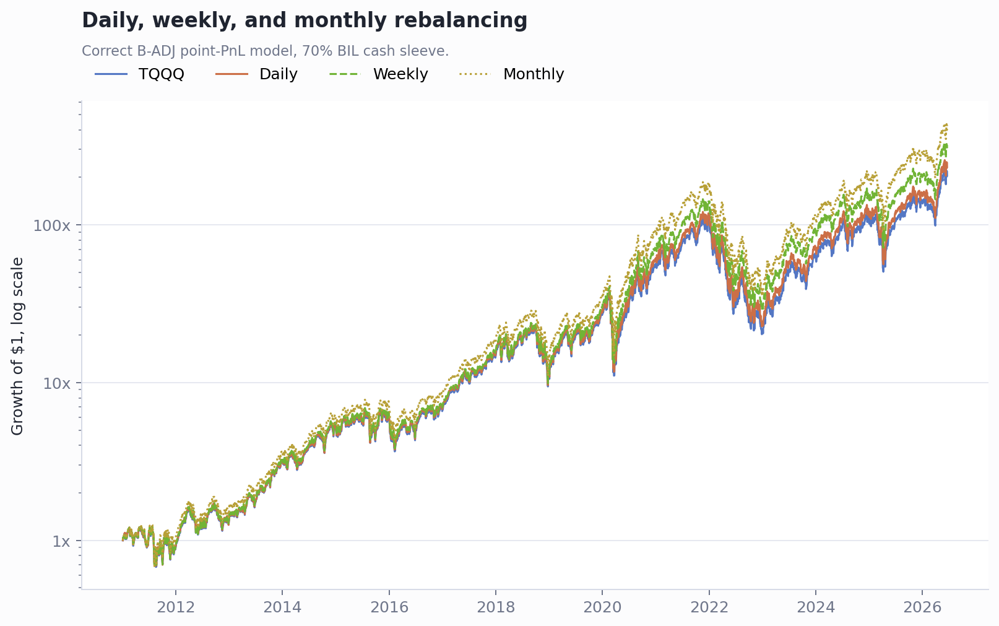
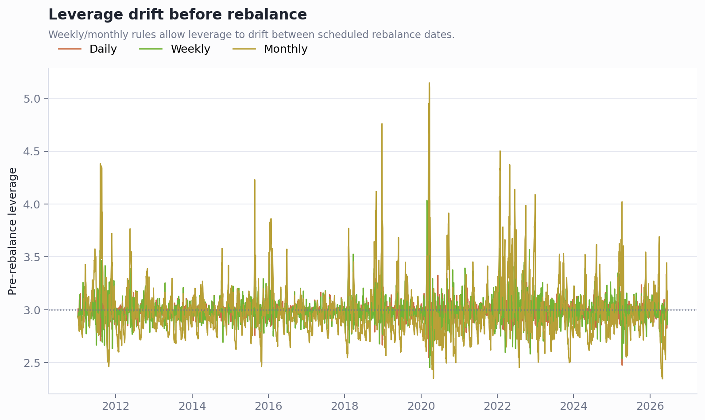

MNQ 3x 再平衡频率比较 - B-ADJ 版
Executive Summary
固定频率里，周平衡是更稳的折中。共同样本为 2011-01-04 到 2026-06-18。日平衡最终 245.66x，周平衡 321.08x，月平衡 429.13x，TQQQ 为 216.10x。
月平衡历史收益最高，但不是免费收益。月平衡的调仓前杠杆最高到 5.15x，显著高于周平衡的 4.66x；它是在趋势上涨阶段多吃了漂移杠杆，代价是保证金压力和路径风险更高。
日平衡最接近“产品化 3x”，但操作最多且波动损耗更完整。真实账户如果不想每天调仓，周平衡或“每周检查 + 杠杆带宽触发”更合理。
结果汇总
| Metric | Daily | Weekly | Monthly |
|---|---|---|---|
| Final multiple | 245.66x | 321.08x | 429.13x |
| CAGR | 42.8% | 45.3% | 48.0% |
| Annualized vol | 62.1% | 63.3% | 67.0% |
| Max drawdown | -81.2% | -80.1% | -81.0% |
| Worst year | 2022.0: -78.6% | 2022.0: -77.3% | 2022.0: -78.3% |
| Leverage range | 2.48x - 3.96x | 2.45x - 4.66x | 2.35x - 5.15x |
| Rebalances / year | 251.5 | 52.7 | 12.1 |
净值路径

杠杆漂移

实操结论
- 如果必须选固定频率：优先选周平衡。
- 如果追求最高历史收益：月平衡更高，但要接受更大的杠杆漂移。
- 如果追求贴近 TQQQ 的每日 3x 产品路径：日平衡最干净，但交易频率过高。
- 对 140k 这类账户，周平衡更适合实际执行；月平衡需要明确上限，比如调仓前杠杆超过 3.5x 或 4.0x 就提前降回 3x。